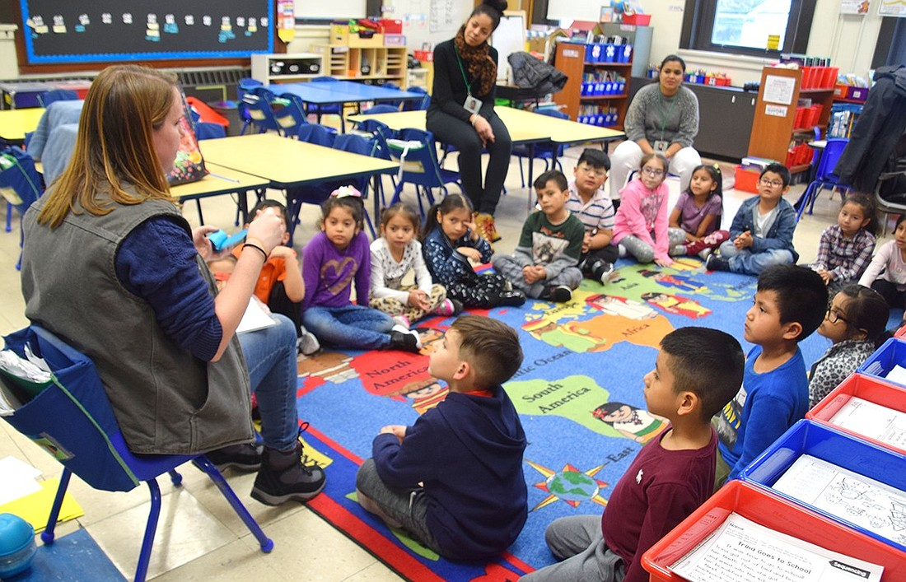
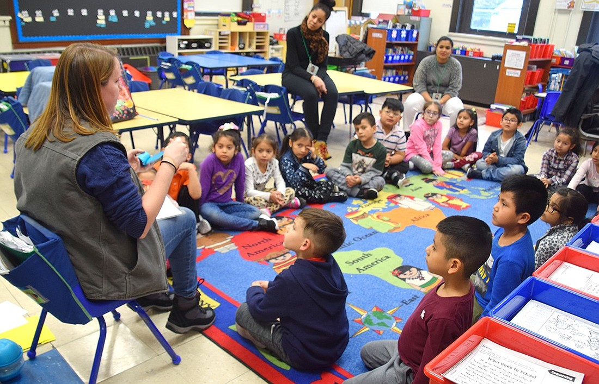

Toan Pham
Hello there, my name is Toan Pham and I'm here to present to you my website
In the increasingly globalized world, the search for well-rounded individuals who could balance technical and non-technical skills seems to be in higher demand than ever. With big players in our society, such as corporations looking for those with vocational skills straight out of college, the importance of interdisciplinary study seems to have faded into the background. Written by Bhakti Ahire, an educator and mechanical engineer, "The Future of Education is Interdisciplinary" defines this term as an approach that "amplifies what students learn by allowing them to tackle problems that don't fit nearly into one subject area" (Ahire). Interdisciplinary study fosters students' ability to think critically and asks them to view their surroundings from a multi-perspective lens. Instead of looking for a direct path to an answer, an interdisciplinary approach pushes students to look outside their preconceived biases and direct their attention toward newly-made paths, those that seem unrelated at first that might unravel into an interconnected web of knowledge.
In an article published by Bret C. Devereaux, "Colleges should be more than just vocational schools," he detailed his frustration regarding the decisions of many universities to abolish many courses and majors that fall under the liberal arts category, such as English, history, language, etc. Traditionally, these courses make up a bulk of what many would consider the field of humanities, where an interdisciplinary approach is well-promoted. These decisions are proportional to the strike against liberal arts by politicians and employers alike. In an ever-increasing capitalistic world, they seem to "express a growing disdain for any courses not explicitly tailored to the job market" (Devereaux). Instead, they focus on producing students as workers straight from colleges. These students, he expressed, are merely "replaceable cogs in America's economic machine, to generate raw material for its largest companies" (Devereaux). They are replaceable, and one simple mistake might render them behind. With the production of ready student-workers, many universities and corporations are demanding students with money-making skills while moving away from building the foundation of interdisciplinary knowledge.
As a University of California, Riverside (UCR) student who plans to become a secondary school English teacher, studying at UCR will help me acquire a solid foundation in English and its related fields, such as literature and writing. To become a well-rounded educator, I will be encouraged to learn and incorporate an interdisciplinary approach into my study through many courses offered here. Thinking through an interdisciplinary approach is highly beneficial to me. It means understanding the what, how, and why from a critical and diverse perspective. Rather than look at things at face value, this approach directs me to take a deeper look at the materials and encourages me to connect them to other mediums. This approach also allows me to broaden my knowledge of things that might not be necessary to learn as an English teacher, such as math or science, but are still valuable. As students are naturally curious, an interdisciplinary approach prepares tools that could help me answer their questions, raise their interest, and provide resources for students to foster their own creativity. Accordingly, I have created a course list that will help guide me in my journey of becoming a teacher. While creating said list, I figured out that the courses that fall under three specific disciplines will impact my education journey most. They are English, education, and Spanish.
Experience
Tutor
• Acted as student aid
• Prepared tests and graded homeoworks
• Collaborated with students and teachers alike
Cashier
• Assisted customers by answering questions, ordering
• Made drinks for customers accordingly
• Managed inventory and janior duty
School Volunteer
• Provided guidance for students with homeworks
• Aided with classroom duties such as taking roll and cleaning
• Fostered an educated and productive learning environment
Education
UC Riverside
Portfolio


